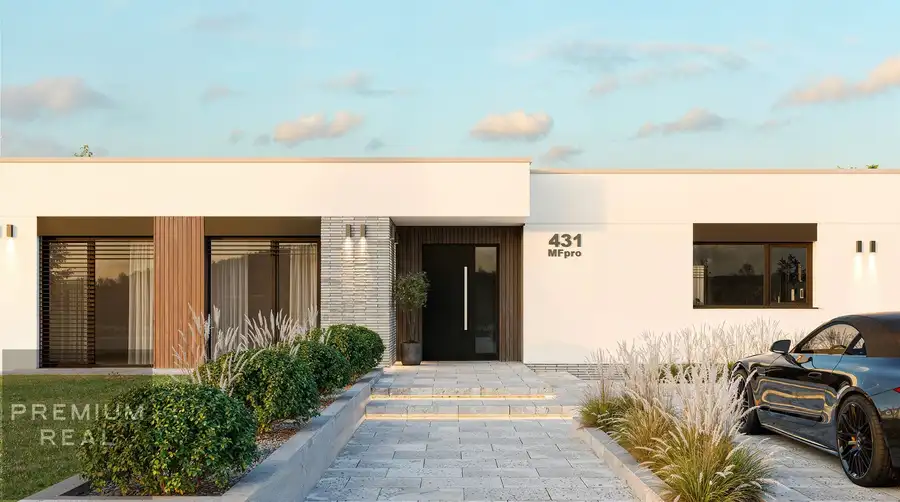
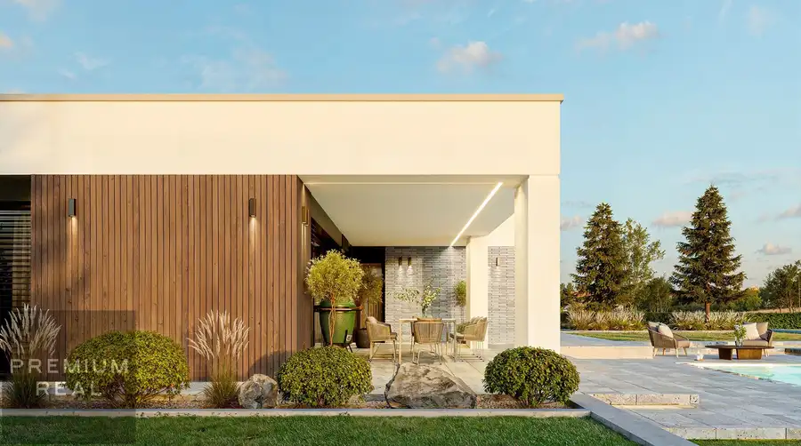
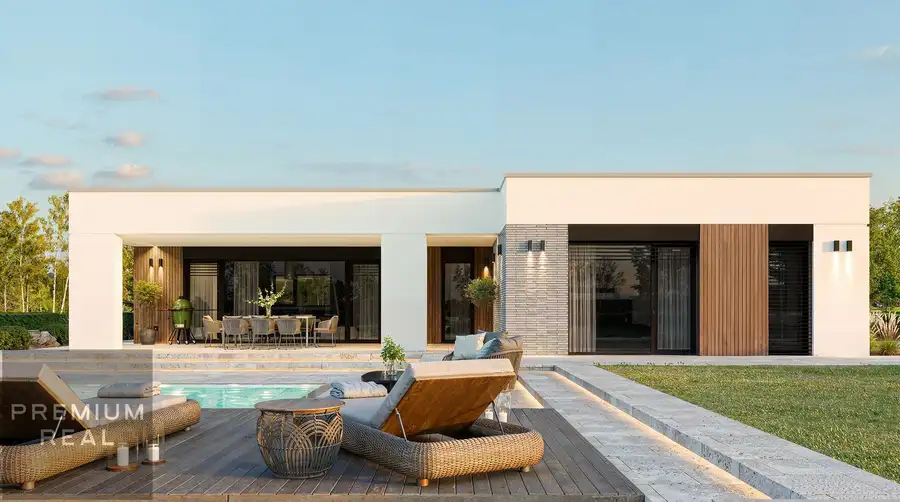
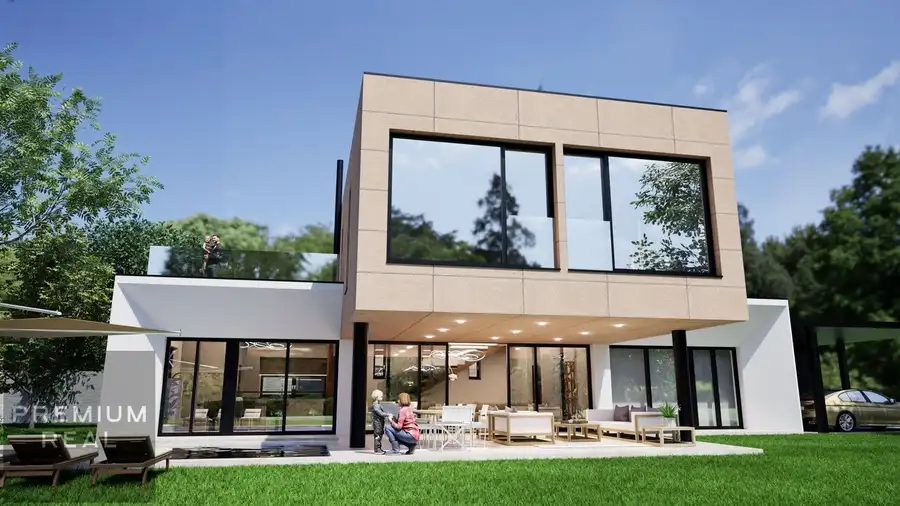
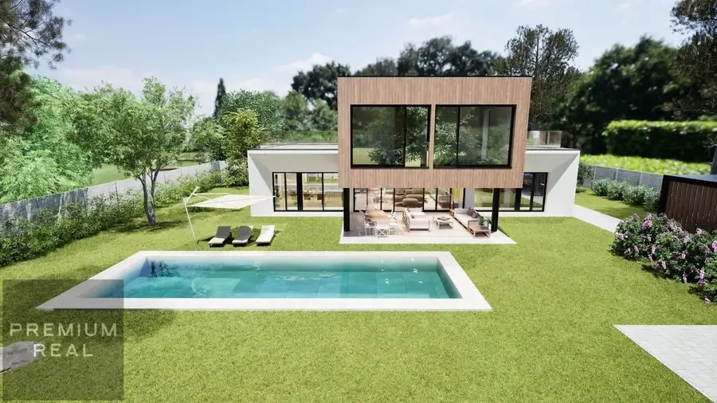
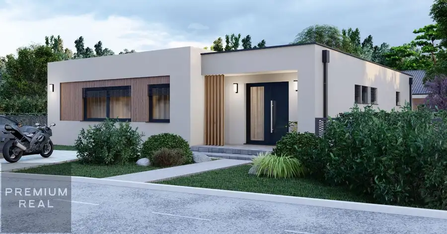

Exkluzívny moderný 5-izbový bungalov v lukratívnej lokalite Chorvátsky Grob
Chorvátsky Grob



- Plocha143 m²
- StavVo výstavbe
- VlastníctvoOsobné
- Energetická triedaA
O nehnuteľnosti
Predstavte si bývanie na mieste, kde sa spája pokojné rodinné prostredie, moderná architektúra a výborná dostupnosť do Bratislavy. Presne to ponúka tento projekt v jednej z najvyhľadávanejších častí Chorvátskeho Grobu.Rodinný dom bungalov je navrhnutý pre rodiny, ktoré chcú viac než len bývanie – chcú komfort, technológie a kvalitu života. Dispozícia domu ponúka dostatok priestoru pre každodenný rodinný život, prácu z domu aj relax.Dôraz je kladený nielen na kvalitné stavebné prevedenie, ale aj na moderné technológie, ktoré zabezpečujú nízke mesačné náklady a vysoký komfort bývania.Dom sa realizuje v stave holodom, čo vám umožňuje dokončiť interiér presne podľa vlastného štýlu a predstáv.Projekt je ideálny pre klientov, ktorí hľadajú moderné bývanie v kvalitnej lokalite s rastúcou hodnotou nehnuteľností.HLAVNÉ BENEFITY •lukratívna a pokojná lokalita•moderná architektúra•energetická trieda A•tepelné čerpadlo s chladením•podlahové vykurovanie•príprava na smart home•príprava na fotovoltaiku•nízke prevádzkové náklady•výborná dostupnosť do BratislavyDISPOZÍCIA RODINNÉHO DOMURodinný dom je prakticky rozdelený na dennú a nočnú časť, čo zabezpečuje dostatok súkromia aj komfortný spoločný priestor pre rodinu.Denná časť domu:•priestranná obývacia izba prepojená s kuchyňou a jedálňou•výstup na terasu a záhradu•samostatná izba vhodná ako pracovňa alebo hosťovská izba•samostatné WC•technická miestnosťNočná časť domu:•hlavná spálňa•detské izby•2x kúpeľňa s možnosťou vane aj sprchového kúta•priestor pre šatník alebo úložné riešenia•šatníkTECHNICKÝ ŠTANDARDDom je postavený z kvalitných materiálov s dôrazom na dlhodobú hodnotu:•podlahové kúrenie•plastové okná s izolačným trojsklom•veľké terasové posuvné dvere•železobetónový strop•kvalitné omietky a potery•zateplenie 18 cm•zateplenie stropu 35 cm•príprava pre internet a TVLOKALITAChorvátsky Grob patrí dlhodobo medzi najobľúbenejšie lokality pre rodinné bývanie v blízkosti Bratislavy. Lokalita ponúka kompletnú občiansku vybavenosť, školy, škôlky, obchody aj rýchle napojenie do hlavného mesta.BONUSOM NEHNUTEĽNOSTI SÚ:•Príprava kabeláže a všetkých rozvodov pre alarm a kamerový systém •Bočné oplotenie pozemku podľa dohody•Možnosť výstavby bazéna s protiprúdom a záhradného domčeku•Vypínače a zásuvky Legrand Cena: 449 900 € vrátane právneho servisu pri prevode nehnuteľnosti.Rodinný dom je vo výstavbe s dokončením druhý kvartál 2027. Ak hľadáte moderný rodinný dom v kvalitnej lokalite, ktorý spája technológie, komfort a dobrú investíciu do budúcnosti, tento projekt je pre vás ideálnou voľbou.Pre viac informácií, alebo osobnú prezentáciu projektu nás neváhajte nás kontaktovať na tel. č. 0917 131 131, alebo emailom premiumreal.petrik@gmail.com
Parametre
- Doprava
- Diaľnica, Cesta, Vlak, Diaľkový autobus, Cyklistická infraštruktúra
- Druh
- Rodinný dom
- Druh domu
- Rodinná vila
- Dátum zverejnenia
- 29. 03. 2026
- Energetická náročnosť
- Nízkoenergetický
- Energetický certifikát budovy
- A
- Orientácia
- Juhozápadná
- Plocha pozemku
- 600 m²
- Podpivničenie
- Nedostupné
- Počet izieb / miestností
- 5
- Počet kúpeľní
- 2
- Počet nadzemných podlaží
- 1
- Počet spální
- 1
- Počet vonkajších parkovacích miest
- 3
- Prístupová komunikácia
- Betónová
- Rok kolaudácie
- 2027
- Rok výstavby
- 2026
- Stav nehnuteľnosti
- Vo výstavbe
- Telekomunikácie
- Internet, Káblová TV, Optická sieť
- Terén pozemku
- Rovinatý
- Typ
- Predaj
- Typ konštrukcie
- Tehlová, Železobetónová
- Vlastníctvo
- Osobné
- Vybavenie
- Technická miestnosť, Vyhradené parkovanie, Záhrada, Vonkajšie parkovacie miesto
- Vybavenie objektu
- Holopriestor
- Vykurovanie
- Podlahové, Tepelné čerpadlo
- Zariadenie
- Holopriestor
- Zastavaná plocha
- 215 m²
- Úžitková plocha
- 143 m²
Kde to je


Mohlo by Vás zaujímať

DomNové 595 000 €Dizajnový moderný 5 izbový rodinný dom V MILOSLAVOVE 6km od Bratislavy Miloslavov 225 m²
DomNové 659 000 €Moderný 5 izbový rodinný dom s bazénom SENEC Lužianky Senec 245 m²
DomNové 387 000 €Moderný 4izbový rodinný dom bungalov 128m2 v Miloslavove 6km od Bratislavy Miloslavov 128 m²